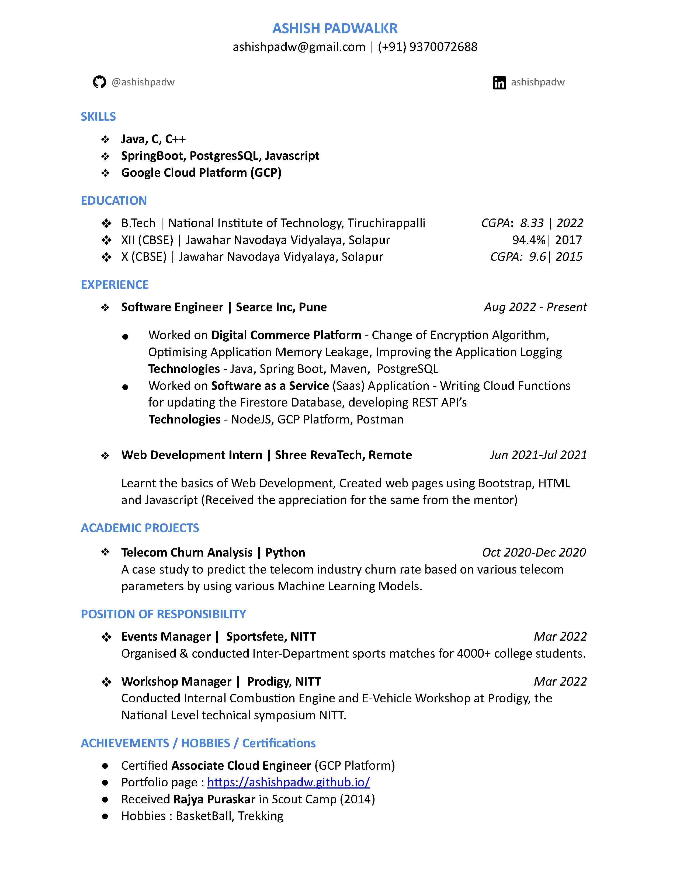

Hello There! I'm Ashish, currently working as a Software Engineer at Searce Inc. I have completed my B.Tech from NIT Tiruchirappalli. I'm a programming enthusiast and have a keen interest in how software works, which makes our lives better and progressive. I also like to participate in coding contests and learn about new emerging technologies.
When not working, I love playing Basketball.
Check out my Resumé and connect with me! 🙃

Crop-Production prediction based on input NPK values of soil, Humidity, and other factors! I started out with this project when I started learning Machine Learning and this project has really helped me get to know hands-on experience on the same.
Reduction of customer churn is important because the cost of acquiring a new customer is higher than retaining an existing one. Reducing customer churn is a key business goal of every business. This case is related to the telecom industry where particular organizations want to know for given certain parameters whether a person will churn or not.